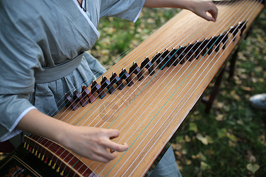

Introduction
The Guzheng is a magnificent plucked zither that has enchanted musicians and audiences alike for over two millennia. With its elegant, curved body and shimmering strings, this instrument is not only an object of beauty but also a profound medium of expression. The unique techniques required—such as precise plucking, bending, and subtle modulation—allow performers to evoke a wide range of emotions from deep melancholy to exuberant joy. Today, the guzheng serves as a bridge between traditional Chinese music and modern sounds, making it a vital symbol of cultural heritage and artistic innovation.
History
The history of the Guzheng dates back over 2,500 years to ancient China. Early versions of this instrument were simple zithers used in folk music. Over centuries, it evolved into a more refined instrument as it became popular in both courtly and scholarly circles during the Qin and Han dynasties.
By the Tang dynasty, the guzheng had blossomed into a celebrated symbol of Chinese cultural life, its rich, melodic tones integral to both ceremonial and entertainment settings. Subsequent dynasties introduced regional variations and innovations in playing techniques, further enhancing its expressive potential. In modern times, the guzheng has experienced a renaissance as traditional musicians and contemporary artists alike blend ancient techniques with modern musical styles, ensuring its legacy endures and continues to captivate audiences around the world.